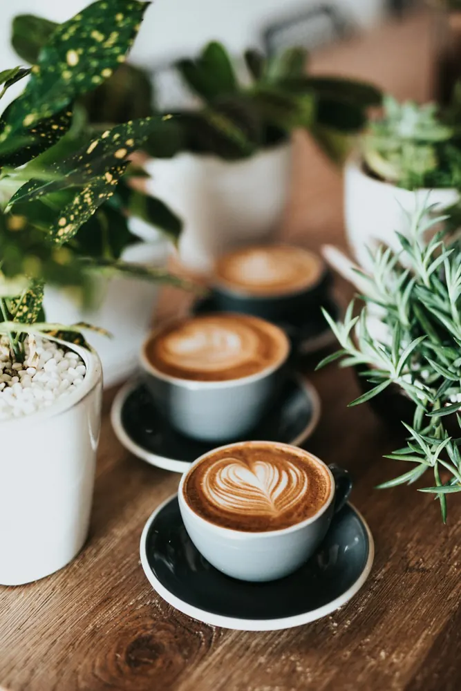
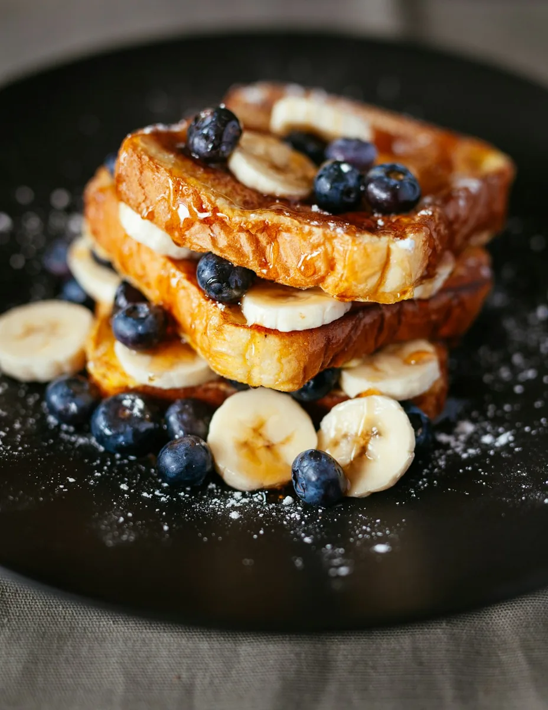
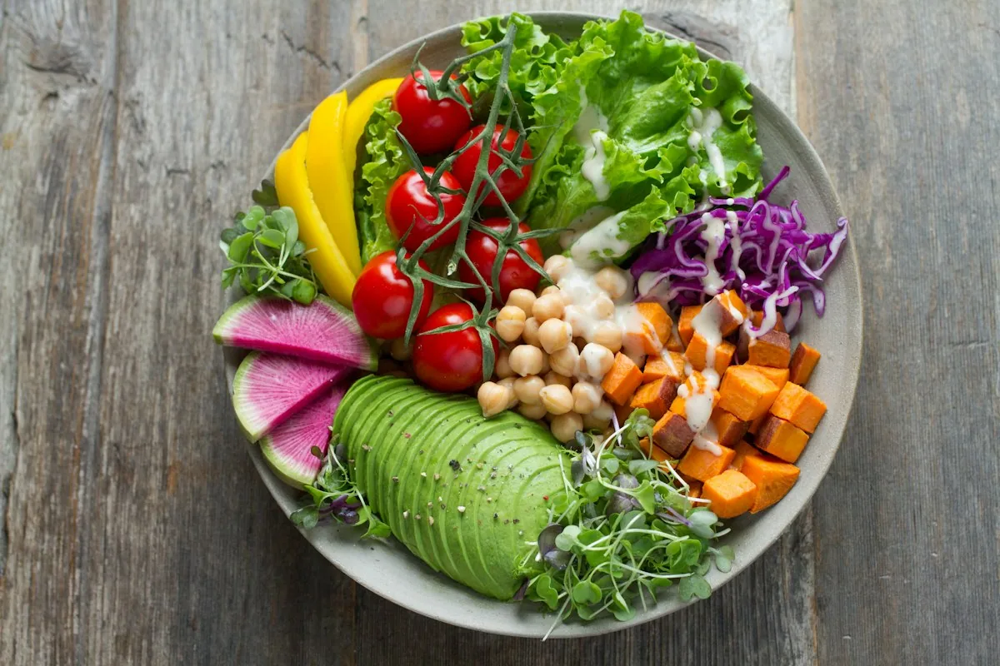
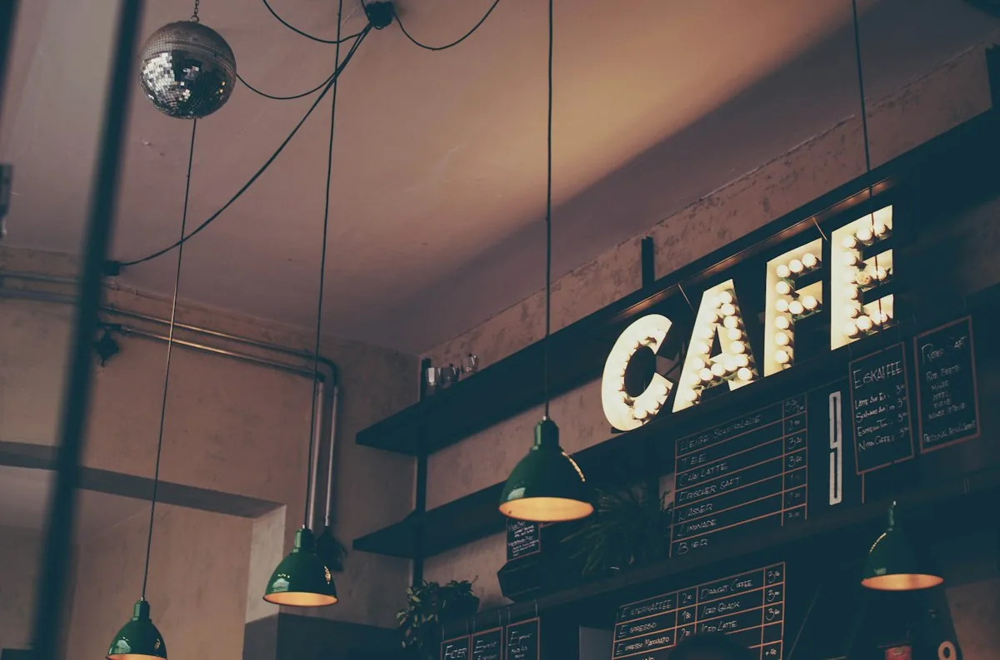
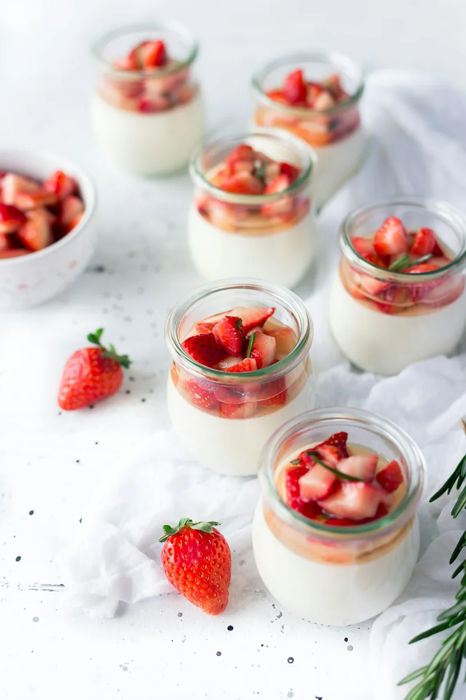

Еспресо
65 ₴Щільний смак, ноти шоколаду
Кава · Сніданки · Теплі вечори
Місце в Черкасах, де ранок починається
з аромату кави, а вечір
— із розмов.
 Добрі ранки починаються тут.
Добрі ранки починаються тут.
Щільний смак, ноти шоколаду

Подвійний еспресо, ніжне молоко

Банан, ягоди, вершковий крем

Ягоди, крем, кленовий сироп

Вершковий сир, ягідний соус

Ваніль, карамель, хрустка вафля

Базилік, пармезан, оливкова олія

Хрустке листя, овочі, цитрусовий соус

02 / Наша історія
Lume — вигадана кавʼярня з дуже справжньою ідеєю: залишити трохи часу для себе. Тут люблять сезонні продукти, прості поєднання й каву без поспіху. Сніданки готують до обіду, а ввечері ділять пасту та історії. Заходьте самі, з друзями чи з книжкою.
03 / Життя між ковтками

04 / Теплі слова
«Той випадок, коли заходиш на каву, а залишаєшся на сніданок.»
«Тихий ранок, смачна їжа й ніякого поспіху. Мій ритм.»
Демо-відгуки. Заклад і гості вигадані.
Черкаси / Чекаємо на вас
Черкаси · демонстраційна адреса
Щодня · 08:00–22:00
Контакти — плейсхолдери. Заклад вигаданий.